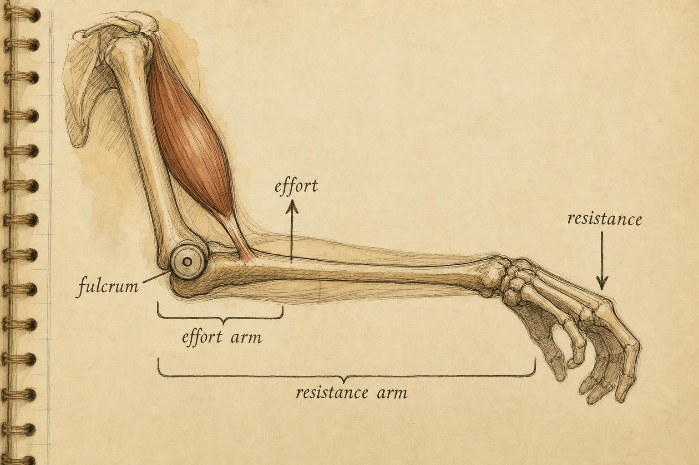
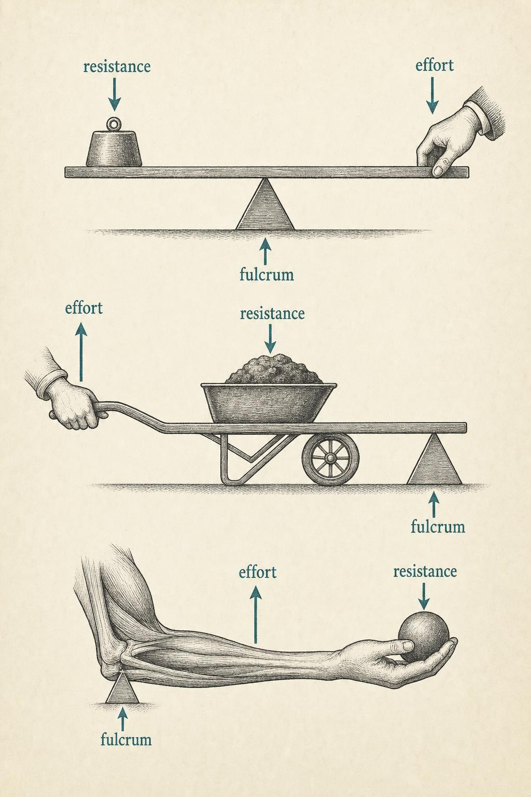

The Skeleton Is a Machine of Levers
Every joint is a bargain struck between force and range — learn to read the terms.
Pick up a dumbbell and curl it. The weight is honest — say twelve kilograms, a load your palm feels as a steady downward pull. Now consider what your biceps must do to hold that load motionless at ninety degrees. It is not generating twelve kilograms of force. It is generating something closer to eight or nine times that. The muscle is losing a lopsided tug-of-war on purpose, and it does so at nearly every joint you own.
This is not a flaw. It is the central design decision of the vertebrate limb, and once you can see it, you can never unsee it. The skeleton is not merely scaffolding that holds you upright. It is a machine — a system of rigid bars, pivots, and applied forces that trades away raw strength to buy something the body values more: speed and reach.
Bones as rigid levers
Start with the simplest possible reframing. A bone, mechanically speaking, is a rigid lever — a bar stiff enough that it does not appreciably bend under the loads of ordinary movement, free to rotate about a pivot. That pivot is a joint. The muscle that crosses the joint pulls on the bar somewhere along its length, and an external load — the dumbbell, gravity, the ground pushing back — resists somewhere else. Everything downstream in this course is bookkeeping on that arrangement: which forces act, where they act, and how far they act from the pivot.
Introductory biomechanics texts deliberately teach mechanics before functional anatomy for exactly this reason. As McGinnis (2020) frames it, you first learn how external forces behave, then how the musculoskeletal system generates internal forces to meet them. The bone is where those two force systems meet. Neumann (2017), writing for a more clinical audience, opens his kinesiology text with the same lever framework — not as an abstraction, but as the working vocabulary a movement professional uses to reason about any joint they will ever assess.
Four terms anchor the whole discussion, and you should be able to point to each one on your own arm.
- The fulcrum is the pivot — the joint axis about which the bone rotates.
- The effort is the force the body itself applies, almost always a muscle pulling on bone through its tendon.
- The resistance is the external force being worked against — a load, body weight, or ground reaction.
- The effort arm and resistance arm are the perpendicular distances from the fulcrum to the line of action of the effort and the resistance, respectively.
Those last two — the arms — are where the machine hides its logic. A force far from the fulcrum has more rotational authority than the same force applied close in. We will formalize that authority as torque in Chapter 4. For now hold the intuition: distance from the pivot is leverage, and leverage is destiny.

The forearm read as a third-class lever: effort close in, resistance far out." data-image-idx="0" style="display:block;max-width:100%;max-height:75vh;height:auto;width:auto;margin:0 auto;cursor:pointer;">The three classes of levers
Physics recognizes three lever classes, distinguished by one question only: what sits between what? Specifically, which of the three points — fulcrum, effort, resistance — occupies the middle position along the bar. That single geometric fact determines whether the lever multiplies force, multiplies range, or simply redirects it. Remarkably, all three classes live inside the human body, and you use each of them every day.
First-class levers: the fulcrum in the middle
In a first-class lever, the fulcrum sits between the effort and the resistance, like a seesaw. The canonical body example is the atlanto-occipital joint — the articulation at the very base of your skull where you nod "yes." The joint is the fulcrum. The weight of your face and jaw, falling forward of that joint, is the resistance. The posterior neck extensors pulling down behind the joint are the effort. Effort on one side, resistance on the other, pivot in between.
First-class levers are versatile: depending on where the fulcrum sits, they can favor force, favor range, or balance the two. A crowbar and a pair of scissors are both first-class. In the body they most often serve a balancing role — the small, constant postural adjustments that keep your head from pitching forward as you read this sentence.
Second-class levers: the resistance in the middle
In a second-class lever, the resistance sits between the fulcrum and the effort. Because the effort is always farther from the fulcrum than the resistance is, the effort arm is always longer — and so this class always multiplies force. This is the wheelbarrow, the nutcracker, the bottle opener.
The body's cleanest example is the calf raise. Rise onto the ball of your foot and watch the geometry. The fulcrum is the ball of the foot, where the toes meet the ground. The resistance is your body weight, transmitted down through the tibia to the ankle, sitting between the toes and the heel. The effort is the pull of the gastrocnemius and soleus through the Achilles tendon at the heel — the point farthest from the fulcrum. Effort arm longer than resistance arm: the calf enjoys a genuine mechanical advantage here, which is precisely why it can hoist your entire body weight onto tiptoe. Keep this example in your pocket. We will return to it repeatedly, because it is the rare joint action where the human machine is arranged to favor force.
Third-class levers: the effort in the middle
In a third-class lever, the effort sits between the fulcrum and the resistance. Here the effort arm is always shorter than the resistance arm — the reverse of the second-class deal — and so this class always costs force. And this, unfortunately or brilliantly, is the arrangement at nearly every limb joint in your body.
Return to the biceps curl. The fulcrum is the elbow. The resistance is the dumbbell in your hand, out at the far end of the forearm. The effort is the biceps, inserting on the radius just a few centimeters past the elbow — close to the fulcrum, between it and the load. That short effort arm is why the muscle must generate many times the load's weight. If the biceps inserts, say, 4 cm from the elbow axis and the dumbbell sits 32 cm away, the effort arm is one-eighth the resistance arm, and the muscle must produce roughly eight times the load force just to hold the position. The tug-of-war we opened with, quantified.
Why would evolution wire nearly every limb this way, saddling the muscles with an eightfold force penalty? The answer is the trade-off that gives this chapter its spine.

Three classes, one distinguishing question: what sits in the middle?" data-image-idx="1" style="display:block;max-width:100%;max-height:75vh;height:auto;width:auto;margin:0 auto;cursor:pointer;">The force-versus-range trade-off
A lever cannot cheat. Whatever a third-class arrangement costs you in force, it must return in something else — and what it returns is speed and range of motion at the far end of the bar. This is the fundamental bargain, sometimes called the force–velocity trade-off of lever geometry, and it is a direct consequence of geometry, not physiology.
Picture the biceps again. It inserts 4 cm from the elbow. When it shortens by a small amount — say 1 cm — the point it pulls on rotates through a certain angle. But the hand, sitting 32 cm out, sweeps through the same angle across a much larger arc. The insertion point moved a little; the hand moved a lot. The muscle traded a small, forceful contraction for a large, rapid excursion of the hand. That is why you can throw, snap, and reach with speed no muscle could produce directly: the third-class lever is a velocity amplifier, and the price of amplification is force.
Say it as a slogan and it will serve you all term: a short effort arm buys speed and range at the cost of force; a long effort arm buys force at the cost of speed and range. The second-class calf raise sits at the force-favoring end. The third-class curl sits at the speed-favoring end. Nearly your whole limb system is deliberately tuned toward speed — which tells you something profound about what selection prioritized in an animal that runs, throws, and manipulates.
The concept of mechanical advantage
We can put a single number on the bargain. Mechanical advantage is the ratio of the effort arm to the resistance arm. When that ratio exceeds one, the lever multiplies force (a second-class calf raise). When it falls below one, the lever multiplies range and demands extra force from the muscle (a third-class curl). Zajac (1989), in his foundational treatment of muscle as a "musculotendon actuator," framed exactly this: the tendon-bone lever geometry modulates the effective force and velocity that a muscle's contraction actually delivers to the skeleton. The muscle produces a raw force–velocity output; the lever then transforms it, and mechanical advantage is the exchange rate.
Why this matters beyond the textbook
You might suspect that lever classes are a tidy pedagogical fiction — real enough, but too simple to survive contact with a live, moving animal. The primary literature says otherwise, and it says something more interesting still: the class is fixed by anatomy, but the effective mechanical advantage is not.
Biewener's (1989) landmark scaling study in Science is the classic demonstration. Ask how an elephant's skeleton survives loads that would shatter a shrew's, given that bone stress scales unfavorably with body size. The answer is not thicker bone alone but posture. Small mammals run crouched, with flexed limbs — long resistance arms relative to their extensor moment arms, meaning low effective mechanical advantage and high muscle forces. Large mammals stand and move with more upright, columnar limbs, aligning the ground reaction force closer to the joints, shortening the effective resistance arm, and raising effective mechanical advantage. The lever classes never change. The geometry within them does, and that adjustable geometry is what keeps a three-ton animal from breaking its own legs.
The same variable operates inside a single human across a single afternoon. Biewener, Farley, Roberts, and Temaner (2004) used inverse dynamics to track effective mechanical advantage (EMA) at the hip, knee, and ankle as people shifted from walking to running. They report a striking result: knee-extensor EMA fell by roughly 68% from walk to run, because the more flexed, crouched posture of running lengthens the resistance arm at the knee. That posture change alone dramatically inflates the quadriceps force required. You do not change your lever class when you break into a run — you change the arms, and the muscles pay the difference.
There is a further, more cautionary lesson in the recent literature. Osgood and colleagues (2020) argue that the classical, quasi-static picture — measure the arm lengths, compute mechanical advantage, predict the output — is genuinely incomplete once muscle physiology and limb inertia enter the picture. Using dynamic musculoskeletal simulations, they show that a single lever morphology can produce a whole range of output velocities depending on how the movement unfolds in time. The static lever tells you the standing bargain; it does not, by itself, tell you the fastest a limb can move. Nigg and Herzog (2007) and Enoka (2022) build precisely this bridge in their graduate treatments — from the clean geometry of moment arms toward the full torque-equilibrium and neuromechanical models that account for how a nervous system actually drives these levers through time.
For this course, hold two truths at once. First, the static lever model is the indispensable foundation — it is the coordinate system in which every later idea is expressed, and you must be fluent in it. Second, it is a first approximation, and the honest professional knows where it stops predicting and dynamics take over. We will spend the term building outward from the foundation while respecting its edges.
The musculoskeletal system does not generate movement so much as negotiate it — every joint a standing contract between the force a muscle can make and the speed a limb must reach.
A working paraphrase of the lever bargain
Reading a joint in the wild
Here is the skill this chapter was built to give you. Confronted with any joint action — a movement you have never analyzed before — you can now run a short, reliable procedure. Locate the fulcrum: it is the joint axis. Locate the effort: find the muscle doing the work and where its tendon inserts. Locate the resistance: find the external load and where it acts. Then ask the one diagnostic question — which of the three sits in the middle? — and you have the class. Compare the two arms and you have the direction of the trade-off: force or range.
Run it on a movement you know. In the deadlift, the hip is a fulcrum, the spinal erectors and glutes supply effort close to that fulcrum, and the barbell plus torso weight resist far out along the lever of the trunk — a punishing third-class arrangement, which is exactly why the movement is so demanding and why bar-to-body distance matters so much. In the overhead press, the sticking point appears right where the resistance arm is longest relative to the shoulder. You are already, on Chapter 1, reading the mechanics that later chapters will merely make quantitative. When any joint action produces persistent pain rather than ordinary fatigue, that is a signal to seek professional evaluation — the lever model explains loads, not injuries, and the two should never be confused.
Key Takeaways
- A bone is a rigid lever; a joint is its fulcrum; a muscle supplies the effort; an external load supplies the resistance. This is the coordinate system for the entire course.
- Lever class is decided by one question: which of fulcrum, effort, or resistance sits in the middle. First-class (fulcrum), second-class (resistance, always force-favoring), third-class (effort, always range-favoring).
- Nearly every limb joint is a third-class lever with a short effort arm — it costs the muscle large forces to buy speed and range at the hand and foot.
- Mechanical advantage is the ratio of effort arm to resistance arm; above one multiplies force, below one multiplies range.
- Lever class is fixed by anatomy, but effective mechanical advantage shifts with posture — Biewener's scaling work and the walk-to-run EMA studies show the same class delivering very different demands.
- The static lever model is foundational but incomplete; dynamic analyses reveal that one morphology can yield a range of output speeds.
We have been speaking loosely of "force far from the fulcrum" and "leverage." In Chapter 4 we give that intuition a precise name and equation: torque, the product of force and moment arm. Everything you sorted by eye in this chapter — favors force, favors range — becomes something you can calculate. Keep the calf raise and the biceps curl close; we are about to put numbers on both.
References
Biewener, A. A. (1989). Scaling body support in mammals: Limb posture and muscle mechanics. Science, 245(4913), 45–48. https://doi.org/10.1126/science.2740914
Biewener, A. A., Farley, C. T., Roberts, T. J., & Temaner, M. (2004). Muscle mechanical advantage of human walking and running: Implications for energy cost. Journal of Applied Physiology, 97(6), 2266–2274. https://doi.org/10.1152/japplphysiol.00003.2004
Enoka, R. M. (2022). Neuromechanics of human movement (6th ed.). Human Kinetics.
McGinnis, P. M. (2020). Biomechanics of sport and exercise (4th ed.). Human Kinetics.
Neumann, D. A. (2017). Kinesiology of the musculoskeletal system: Foundations for rehabilitation (3rd ed.). Elsevier.
Nigg, B. M., & Herzog, W. (2007). Biomechanics of the musculo-skeletal system (3rd ed.). Wiley.
Osgood, A., Reddy, P., Roberts, C., Rankin, J. W., & McGowan, C. P. (2020). Simple muscle-lever systems are not so simple: The need for dynamic analyses to predict lever mechanics that maximize speed. bioRxiv. https://doi.org/10.1101/2020.10.14.339390
Zajac, F. E. (1989). Muscle and tendon: Properties, models, scaling, and application to biomechanics and motor control. Critical Reviews in Biomedical Engineering, 17(4), 359–411.